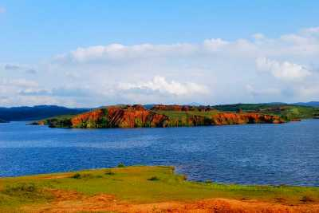

Wayanad
Wayanad adorns the northern tip of Kerala and is among the few areas in the world that have managed to conserve their natural charm and beauty. Teeming with rare flora and fauna, it is considered among the most picturesque locations in Kerala. It is host to a large variety of endemic species. One is surrounded by mist-covered peaks and lush greenery on all sides. The tribals of the area are renowned for their unique customs and the festivals here are true celebrations of the harmony between man and nature. Many prominent resorts have come up in this area as well and provide our visitors with many adventure sports and trekking options in the very palms of nature.
Tourist Attractions

Banasura Sagar Dam
Lying in the lap of the Banasura hills in the Wayanad district is the picturesque Banasura Sagar dam. Banasura Dam is the largest earthen dam in the country and the second-largest in Asia. The view of the sprawling reservoir from the top of the dam is breathtaking. Adventures like speed boating are readily available, and a trek up to the Banasura Peak is filled with streams, diverse flora, fauna, lush tropical green and majestic waterfalls.
Wayanad wildlife sanctuary
Wayanad Wildlife Sanctuary is the second largest wildlife sanctuary in Kerala and comprises of rare as well as endangered species of both flora and fauna. It is surrounded by the protected areas of Mudumalai in Tamil Nadu as well as Nagarhole and Bandipur in Karnataka. The sanctuary is spread over an area of 345 square km and comprises of two parts namely Upper Wayanad and Lower Wayanad